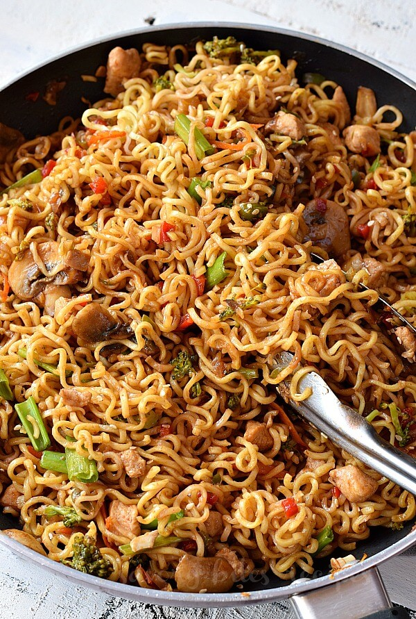

The Noodles

Luscious, lengthy, lovely Noodles
This recipe, soon to be revealed, has changed my very existance. If prepared correctly, your right sock specifically will rapidly remove itself from your foot!
How can I be so sure you may ask? Well, I can't...
Just do yourself a favor and give it a try!
Giant flashing ad with no visable "X" button Click here! Click Me! All the moneys and stuff!
In all seriousness, this recipe is a great base for left-overs. These noodles are quick, tasty, and work with tons of protien options!
Ingredients
- Preferd noodles. (Cheap ramen, Simply asia, Udon, or home-made
- Soy sauce 1/4 cup
- Sesame oil 2 tsp
- Minced garlic 1-3 cloves
- Brown sugar 2 tbsp.
- Sambal Oelek 1 tsp.
- 1 handful of shredded carrots
- 1 hand full of finely sliced green onion
Steps
- Pace enough water to submerge your noodles over medium high heat and allow to boil.
- If leftover protien is not availible, fully cook your protien of choice before starting the sauce.
- Start heating a large skillet over meduim low heat, add the sesame oil and garlic.
- Once fragrant, add the soy sauce, brown sugar, sambal oelek, and shredded carrots.
- Turn the sauce to low heat and begin cooking your noodles.
- Finely slice your green onion and set aside.
- Chop your protien of choice and set aside.
- Once your noodles are fully cooked, drain them and add to the sauce.
- Carefully mix the sauce into the noodles and and gather your bowls.
- Fill your bowls with noodles, add your protien, and garnish with green onion
- Enjoy!